RNS401 Sketchy Pharm Pictures
Every video from the RNS401 Pharm list (MD4): the Sketchy mnemonic scene, an exam snapshot, and a corrected, expanded explanation of every numbered icon. Open the original legend picture under any video to compare. Check off videos as you review them — progress is saved in this browser. Use the search box to jump to a specific drug class. Click the expand icon on an image to view it full screen.
1. Asthma Therapy
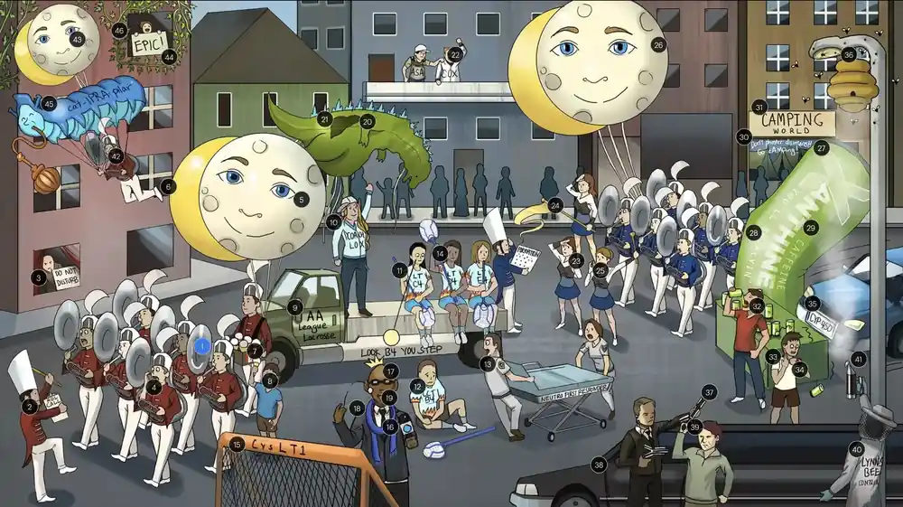
Exam snapshot
- Drugs: SABA (albuterol, terbutaline), LABA (salmeterol, formoterol), inhaled corticosteroids (beclomethasone, budesonide, fluticasone), LTRA (montelukast, zafirlukast), zileuton, theophylline, cromolyn, omalizumab, ipratropium.
- Mechanisms: beta-2 agonism raises cAMP (bronchodilation); steroids block inflammation; LTRAs block CysLT1; zileuton inhibits 5-lipoxygenase; theophylline inhibits PDE and blocks adenosine; omalizumab binds free IgE; cromolyn stabilizes mast cells.
- Use: SABA for acute relief; ICS is the mainstay controller; add LABA (never alone), LTRA, theophylline or omalizumab; exacerbation: SABA, ipratropium, systemic steroids, epinephrine/terbutaline.
- Adverse effects: SABA - tremor, tachycardia, hypokalemia; ICS - oral candidiasis, dysphonia; zileuton - hepatotoxicity; theophylline - narrow therapeutic index, arrhythmia, seizures; montelukast - neuropsychiatric effects.
- Buzzwords: aspirin-exacerbated respiratory disease (COX blockade shifts to leukotrienes; use LTRA), LTD4 most potent bronchoconstrictor, cromolyn is prophylaxis only, omalizumab for allergic IgE-mediated asthma.
- 1Dilated beta 2 tuba: Selective beta-2 agonists (albuterol, levalbuterol) activate Gs, increase cAMP and relax bronchial smooth muscle, relieving bronchoconstriction (rescue therapy).
- 2ROL call: The "-terol" suffix (albuterol, salmeterol, formoterol, pirbuterol) marks selective beta-2 agonists.
- 3"Do not disturb": Terbutaline is a selective beta-2 agonist that treats bronchoconstriction; it also relaxes the uterus (tocolysis, "do not disturb" the pregnancy) and is a subcutaneous option in severe asthma.⭐ Beta-2 agonists cause hypokalemia, tremor and tachycardia.
- 4Inhaler: Short-acting beta-2 agonists are delivered by metered-dose inhaler or nebulizer for acute symptom relief (rescue inhaler).
- 5Moon face: Inhaled corticosteroids (beclomethasone, budesonide, fluticasone) are first-line daily maintenance (controller) therapy for persistent asthma.
- 6Moon eclipsing inflammatory sun: Corticosteroids reduce airway inflammation by decreasing cytokine production, eosinophil/inflammatory cell infiltration and mucus, and increase beta-2 receptor expression.
- 7Canadian snow: Represents Candida albicans, a fungal opportunistic pathogen.
- 8Snow cone tongue: Inhaled corticosteroids can cause oropharyngeal candidiasis (thrush) and hoarseness; use a spacer and rinse the mouth after use.
- 9AA league: Arachidonic acid (AA), released from membrane phospholipids by phospholipase A2, is the precursor of both prostanoids (via COX) and leukotrienes (via LOX).
- 10Lacrosse Coach Lox: 5-lipoxygenase (5-LOX) converts arachidonic acid to leukotrienes.
- 11Lacrosse players: Leukotrienes LTB4, LTC4, LTD4 and LTE4 are important inflammatory mediators in asthma and allergy.
- 12B4 attracting first-responders: LTB4 is a chemoattractant for neutrophils and other inflammatory cells.
- 13First responders: Neutrophils, the first inflammatory cells recruited to injury, are chemotactically attracted by LTB4.
- 14Constricted lacrosse stick bronchi: The cysteinyl leukotrienes LTC4, LTD4 and LTE4 cause bronchoconstriction, increased vascular permeability and mucus production.
- 15Lacrosse goal CysLT1: Cysteinyl leukotriene receptor 1 (CysLT1) binds LTD4, the most potent bronchoconstrictor leukotriene.
- 16Monte the broadcaster: "-lukast" suffix: montelukast and zafirlukast are CysLT1 (LTD4) receptor antagonists.
- 17Blocked D4 shot: Leukotriene receptor antagonists are alternative or add-on therapy for mild persistent asthma and especially useful in aspirin-induced asthma and allergic rhinitis; they are used for prophylaxis, not acute attacks.⭐ Montelukast has a boxed warning for neuropsychiatric events.
- 18Dilated scarf: Blocking CysLT1 receptors reduces bronchoconstriction, causing bronchodilation and less inflammation.
- 19Open mouth: Leukotriene receptor antagonists are given orally.
- 20Godzilla falling on Coach Lox: Zileuton directly inhibits 5-lipoxygenase, blocking synthesis of all leukotrienes; an alternative therapy for mild persistent asthma.
- 21Liver spot: Zileuton can cause hepatotoxicity (monitor LFTs); it also inhibits CYP1A2 (raising theophylline levels).
- 22ASA umpire grabbing Coach Cox: Aspirin and NSAIDs inhibit COX, shunting arachidonic acid to the LOX pathway and increasing leukotriene production, which causes aspirin-exacerbated respiratory disease (asthma, nasal polyps, aspirin sensitivity).⭐ Treat AERD with LTRAs or zileuton and avoid NSAIDs.
- 23Salute formation: Salmeterol and formoterol are long-acting beta-2 agonists (LABA) added to ICS for moderate-to-severe persistent asthma.
- 24Long tapering flag: LABAs have a long duration of action (12 hours) due to lipophilic tails that anchor in the cell membrane.
- 25Inhaler: LABAs are used as daily controller inhalers, always combined with an inhaled corticosteroid because LABA monotherapy increases asthma-related death.⭐ Never use LABA alone in asthma.
- 26Higher moon face: Higher-dose inhaled corticosteroids are used in moderate-to-severe persistent asthma, with potential systemic effects at high doses.
- 27Xanthine energy drink: Methylxanthines (theophylline) are alternative add-on therapy for persistent asthma (and COPD) when other agents fail; rarely used due to toxicity.
- 28"flyin": Theophylline is the prototypical methylxanthine drug (aminophylline is its IV form).
- 29Caffeine: Methylxanthines are chemically related to caffeine and theobromine.
- 30"Don't phoster disinterest": Methylxanthines inhibit phosphodiesterase (preventing cAMP breakdown) and block adenosine receptors.
- 31"Camping": Increased cAMP in airway smooth muscle causes bronchodilation.
- 32Open mouth: Theophylline is administered orally (sustained-release); aminophylline can be given IV.
- 33Shaking kid: Methylxanthines cause CNS stimulation: nervousness, insomnia, tremor, and at toxic levels seizures.
- 34Holding up heart watch: Methylxanthines cause tachycardia and arrhythmias (cardiac stimulation); toxicity includes nausea, vomiting, seizures and ventricular arrhythmias.⭐ Narrow therapeutic index requires drug level monitoring.
- 35Chrome bumper hitting energy drinks: Theophylline is metabolized by hepatic CYP450 (CYP1A2), so inhibitors (ciprofloxacin, erythromycin, cimetidine, zileuton) raise levels and inducers (smoking, rifampin) lower them.
- 36Bee hive: Mast cell degranulation is key in the pathogenesis of allergic (atopic) asthma, releasing histamine, leukotrienes and prostaglandins.
- 37IgE gun shooting hive: Allergen binding to IgE bound to FcepsilonRI on mast cells causes cross-linking, degranulation and release of mediators (histamine, leukotrienes).
- 38Limousine: Omalizumab, a recombinant humanized anti-IgE monoclonal antibody ("-zumab"), is add-on therapy for moderate-to-severe persistent allergic asthma with elevated IgE.⭐ Risk of anaphylaxis.
- 39Grabbing end of IgE gun: Omalizumab binds the Fc portion of free IgE, preventing it from binding mast cell FcepsilonRI and thereby preventing mast cell sensitization and degranulation.
- 40Lynn's bee control: Cromolyn sodium is a mast cell stabilizer used for prophylaxis of asthma, allergic rhinitis and allergic conjunctivitis.
- 41Bee sedating smoke: Cromolyn sodium prevents mast cell degranulation and histamine release; it is ineffective for acute attacks and has little systemic toxicity.⭐ Prophylaxis only, not for acute asthma.
- 42Beta-2 tuba: Inhaled short-acting beta-2 agonists (albuterol), often repeated or nebulized, are first-line for acute severe asthma exacerbation.
- 43Moon face: Systemic corticosteroids (prednisone, methylprednisolone) are given in acute severe exacerbations to reduce airway inflammation and relapse.
- 44Ivy: Steroids are given intravenously (or orally) during an acute severe exacerbation; oral is equally effective if the patient can swallow.
- 45Cat-ipra-pillar: Nebulized ipratropium (a muscarinic antagonist) is added to SABA in severe exacerbations, blocking vagal-mediated bronchoconstriction and reducing hospitalization.
- 46Epic: Subcutaneous or intramuscular epinephrine (or terbutaline) is used in severe, refractory asthma exacerbation when inhaled therapy is not possible or effective.
Show the original legend picture
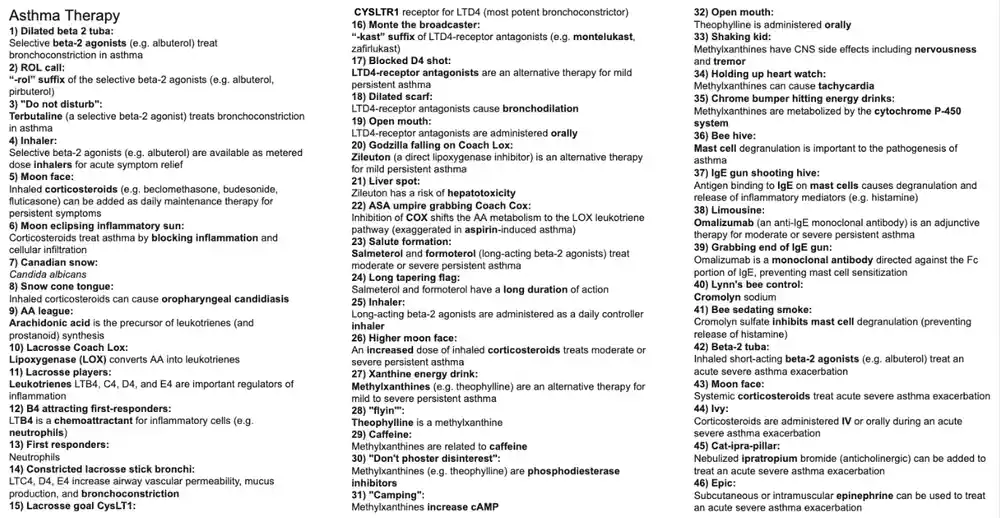
2. Antihistamines
Exam snapshot
- Drugs: 1st generation - diphenhydramine, dimenhydrinate, chlorpheniramine, hydroxyzine, meclizine, promethazine, cyproheptadine; 2nd generation - loratadine, cetirizine, fexofenadine.
- Mechanism: competitive (inverse agonist) blockade of H1 receptors (Gq: PLC, IP3, DAG, increased Ca2+); H2 receptors are Gs coupled and mediate gastric acid secretion.
- Indications: allergic rhinitis, urticaria; 1st gen also motion sickness/vertigo, insomnia, pruritus, nausea and acute dystonia from antipsychotics.
- Adverse effects of 1st gen: sedation, anticholinergic effects (dry mouth, urinary retention, constipation, blurred vision, delirium), anti-alpha-1 orthostasis, weight gain; avoid in elderly (Beers) and glaucoma/BPH.
- 2nd gen: non-sedating, minimal CNS penetration; fexofenadine avoid with fruit juice; H2 blockers (cimetidine, famotidine) treat GERD, not allergy.
- 1Beehive: Histamine is stored in granules of mast cells and basophils and released on degranulation (e.g. IgE cross-linking in type I hypersensitivity).
- 2"Q" dandelion: H1 receptors are Gq-coupled (PLC activation, IP3/DAG, increased intracellular Ca2+), mediating allergic inflammatory effects.
- 3Honeypot with 2 "S" handles: H2 receptors are Gs-coupled (increased cAMP).
- 4Golden gastric honey: H2 receptor activation on gastric parietal cells stimulates H+/K+ ATPase and gastric acid secretion; H2 blockers (cimetidine, famotidine, ranitidine) reduce acid.
- 5Dripping nose sap: Histamine acting at H1 receptors increases nasal and bronchial mucus secretion (allergic rhinitis, rhinorrhea).
- 6Dripping vascular sap: H1 activation increases vascular permeability (via endothelial cell contraction), causing edema, urticaria/wheals and, with vasodilation, hypotension in anaphylaxis.
- 7Constricted lung branch: H1 activation contracts bronchial smooth muscle, causing bronchoconstriction.⭐ Antihistamines do not reliably treat asthma or anaphylaxis (epinephrine does).
- 8Brain tree: Histamine is a CNS neurotransmitter (tuberomammillary nucleus) promoting wakefulness; H1 blockade that crosses the blood-brain barrier causes sedation.
- 9Bee swatter: H1 receptor blockers (antihistamines) are competitive antagonists/inverse agonists used for allergic conditions.
- 10Dragonfly fairy: Diphenhydramine and dimenhydrinate are first-generation H1 blockers.
- 11Color fairy: Chlorpheniramine (also brompheniramine) is a first-generation H1 blocker.
- 12Fairy cuiSINE: Hydroxyzine, meclizine and promethazine are first-generation H1 blockers; hydroxyzine is used for pruritus and anxiety, promethazine is an antiemetic (also D2 blocker), meclizine treats vertigo.
- 13Fairy dust and dander: H1 blockers treat type I hypersensitivity: allergic rhinitis, urticaria, allergic conjunctivitis; second-generation agents are preferred as first-line.
- 14Seasick fairy sailors: First-generation H1 blockers (dimenhydrinate, meclizine, diphenhydramine, promethazine) treat motion sickness, vertigo and nausea because they are lipophilic, cross the BBB and block H1/muscarinic receptors in the vestibular system and brainstem.
- 15Sleeping under brain tree: First-generation H1 blockers cause sedation due to CNS H1 blockade; diphenhydramine and doxylamine are used as OTC sleep aids.⭐ Sedation worsens with alcohol and other CNS depressants.
- 16Antimuscarinic tea party: First-generation H1 blockers block muscarinic receptors causing dry mouth, mydriasis/blurred vision, urinary retention, constipation, tachycardia and delirium; use cautiously in glaucoma and BPH.⭐ Atropine-like: "blind as a bat, dry as a bone, red as a beet, mad as a hatter."
- 17Falling "extra parking" cone: Diphenhydramine treats acute dystonia (extrapyramidal side effect of antipsychotics) because its anticholinergic effect restores the dopamine-acetylcholine balance (benztropine is the other option).
- 18Cut smiley face cake: Some first-generation H1 blockers (especially cyproheptadine) block serotonin (5-HT2) receptors in the CNS.
- 19Stuffed fairy: Antiserotonergic effects increase appetite and cause weight gain; cyproheptadine is used as an appetite stimulant and for serotonin syndrome and carcinoid symptoms.
- 20Extinguished single alpha candle: First-generation H1 blockers block alpha-1 adrenergic receptors, causing vasodilation.
- 21Fainted fairy: Alpha-1 blockade produces dizziness, orthostatic hypotension and syncope.
- 22Delirious elderly man: First-generation H1 blockers cause confusion, delirium and cognitive impairment in the elderly (central antihistamine and anticholinergic effects); they are on the Beers list.⭐ Avoid diphenhydramine in the elderly.
- 23Fox, satyr, and rat: Second-generation H1 blockers: loratadine, desloratadine, fexofenadine, cetirizine (levocetirizine); "-adine"/"-izine" are common name cues.
- 24Fox, satyr, and rat stand outside of brain tree: Second-generation H1 blockers are less lipophilic and are substrates of the P-glycoprotein efflux pump at the BBB, so little CNS penetration: non-sedating, with minimal anticholinergic, antiserotonergic and anti-alpha effects.⭐ Cetirizine is the most sedating of the second-generation agents.
Show the original legend picture
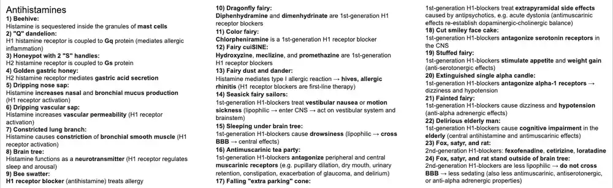
3. Opioids, Naloxone, Naltrexone
Exam snapshot
- Opioid receptors (mu, kappa, delta) are Gi/o-coupled: open K+ channels, close presynaptic Ca2+ channels, and reduce neurotransmitter release; mu mediates analgesia, sedation, respiratory depression, miosis, constipation.
- Agents: morphine, fentanyl, tramadol (weak mu agonist plus SNRI action, lowers seizure threshold), loperamide and diphenoxylate (antidiarrheals), codeine and dextromethorphan (antitussives; dextromethorphan is an NMDA antagonist).
- Toxicity: respiratory depression, pinpoint pupils, constipation, biliary colic, sedation; tolerance develops to most effects except miosis and constipation; chronic use can cause hyperalgesia and withdrawal with rhinorrhea, yawning, diarrhea, and anxiety.
- Opioid use disorder treatment: methadone (long-acting full agonist) and buprenorphine (long-acting partial mu agonist); partial agonists can precipitate withdrawal; neonatal abstinence syndrome in exposed infants.
- Antagonists: naloxone reverses acute overdose (short-acting, can precipitate withdrawal); naltrexone maintains abstinence in opioid and alcohol use disorder and is used for weight loss with bupropion.
- 1Utopia: Opiates are drugs derived from or acting like opium (poppy) alkaloids, acting on endogenous opioid receptors (mu, kappa, delta) for analgesia and related effects.
- 2Mu massage: The mu-opioid receptor mediates most clinical and adverse effects: analgesia, euphoria, sedation, respiratory depression, miosis, and constipation.⭐ Kappa: spinal analgesia, dysphoria, miosis. Delta: analgesia, antidepressant-like effects.check original
- 3Open banana barrels: Opioid receptors are Gi/o-coupled; they open K+ channels, causing efflux and hyperpolarization of the postsynaptic neuron.
- 4Closed Calci-Yum ice cream cooler: Opioid receptors close presynaptic voltage-gated Ca2+ channels and decrease cAMP.
- 5Disconnected presynaptic wire: Closing presynaptic voltage-gated Ca2+ channels prevents neurotransmitter release (glutamate, acetylcholine, norepinephrine, serotonin, substance P), which blunts pain transmission.
- 6Fantasy: Fentanyl is a potent, short-acting synthetic opioid analgesic (about 100x morphine), used IV, epidural, and transdermally for severe pain and anesthesia.
- 7More fun: Morphine is the prototype opioid analgesic used for severe pain, including acute MI pain and acute pulmonary edema (reduces preload and anxiety).
- 8Distant tram: Tramadol is a weak mu-opioid receptor agonist used to manage chronic pain.
- 9North-South: Tramadol also inhibits reuptake of norepinephrine and serotonin.⭐ Tramadol lowers the seizure threshold and can cause serotonin syndrome, especially with SSRIs, SNRIs, or MAOIs.
- 10Colon massage table: Opioid receptors are located in the GI tract; activation delays stool transit and increases fluid absorption, causing constipation.check original
- 11Removed muddy slippers: Opioids such as loperamide and diphenoxylate are used as antidiarrheals.
- 12Lop-eared rabbit: Loperamide is an opioid antidiarrheal that acts on gut mu-receptors and has minimal CNS effects because it does not cross the blood-brain barrier well (P-glycoprotein efflux).⭐ Loperamide is contraindicated in invasive or bloody diarrhea and C. difficile colitis. Very high doses can cause cardiac toxicity (QT prolongation).
- 13Loping back and forth: Loperamide increases colonic phasic segmentation, which slows propulsion and increases stool transit time.
- 14Dolphins: Diphenoxylate is an opioid antidiarrheal, combined with atropine (Lomotil) to discourage abuse.
- 15Barcode: Codeine is an opioid antitussive (cough suppressant) and a weak analgesic.⭐ Codeine is a prodrug activated to morphine by CYP2D6; ultrarapid metabolizers are at risk of toxicity (avoid in children and breastfeeding mothers).
- 16Orphan: Dextromethorphan is a nonaddictive antitussive that is a synthetic codeine analog.
- 17Tethered nomadic camel: Dextromethorphan antagonizes NMDA receptors; at high doses it can cause dissociative effects and hallucinations.⭐ Dextromethorphan with MAOIs or SSRIs can cause serotonin syndrome.
- 18Cerebral towel: Opiates cause CNS depression, including sedation, and can cause euphoria.
- 19Deflated lung vest: Opiates can cause respiratory depression by decreasing the brainstem response to CO2. This is the usual cause of death in overdose.
- 20Constricted hood: Opiates cause miosis (pinpoint pupils) via stimulation of the Edinger-Westphal nucleus.⭐ Pinpoint pupils plus respiratory depression and coma is the classic opioid overdose triad. Meperidine is an exception that can cause mydriasis in overdose.
- 21Plunger: Opiates cause constipation, because of decreased GI motility and secretions.
- 22Biliary tree: Opiates can cause biliary colic by contracting biliary smooth muscle and the sphincter of Oddi.
- 23All are welcome: Patients can develop tolerance to opiates, including to analgesia, euphoria, sedation, and respiratory depression.
- 24Out of order: Tolerance does not develop to miosis or constipation, so these effects persist with chronic use.
- 25Causing pain: Opioid-induced hyperalgesia (increased pain sensitivity) can occur with chronic opioid use.
- 26Anxious, hot, and moist: Opioid withdrawal causes rhinorrhea, lacrimation, yawning, hyperventilation, hyperthermia, muscle aches, vomiting, diarrhea, and anxiety. It is very unpleasant but rarely life-threatening.⭐ Treat with methadone or buprenorphine; clonidine can reduce autonomic symptoms.
- 27DONE timer: Methadone is a long-acting opioid (full mu agonist) used to attenuate withdrawal symptoms and for maintenance therapy of opioid use disorder; it can also treat chronic pain.⭐ Methadone can prolong the QT interval and is also an NMDA antagonist.
- 28Long tapering flag: Methadone and buprenorphine have long half-lives, which makes them useful in opioid detoxification and maintenance with less euphoria and fewer withdrawal swings.
- 29Blueprint: Buprenorphine is a long-acting partial mu-opioid agonist used to attenuate withdrawal symptoms and for maintenance treatment of opioid use disorder.⭐ Often given sublingually combined with naloxone to deter IV misuse. Has a ceiling effect on respiratory depression, so it is safer in overdose than full agonists.
- 30Irritable, moist, tachypneic baby: Neonatal abstinence syndrome occurs in infants of opioid-dependent mothers: diarrhea, sweating, sneezing, crying, tachypnea, and irritability.
- 31Partial massage: Partial mu-opioid agonists (buprenorphine, and by the scene nalbuphine and butorphanol) activate the receptor with lower intrinsic activity than full agonists.⭐ Nalbuphine and butorphanol are kappa agonists with mu partial agonist or antagonist activity.check original
- 32Bluefin: The 'bu-phin' stem marks the partial opioid agonists, such as buprenorphine, nalbuphine, and butorphanol.
- 33Falling into the withdraw spa: Partial mu-opioid agonists can precipitate withdrawal in patients dependent on full agonists, because they displace the full agonist while providing less receptor activation.
- 34No lax zone: Naloxone is a mu-opioid receptor antagonist (competitive) used to reverse acute opioid toxicity. It can precipitate withdrawal in dependent patients.⭐ Naloxone has a short half-life (1-2 hours) so repeat dosing or an infusion may be needed after long-acting opioids like methadone.
- 35No tricks zone: Naltrexone is a long-acting opioid receptor antagonist that helps maintain abstinence in patients with opioid (heroin) use disorder, given orally or as a monthly injection.⭐ Patients must be opioid-free before starting or it precipitates withdrawal. Monitor liver function.
- 36Tempting alcohol: Naltrexone (mu-opioid antagonist) helps reduce cravings for alcohol and nicotine.⭐ Naltrexone is first-line for alcohol use disorder, in contrast to disulfiram or acamprosate.
- 37Getting fit: Naltrexone can help with weight loss, as when combined with bupropion.
Show the original legend picture
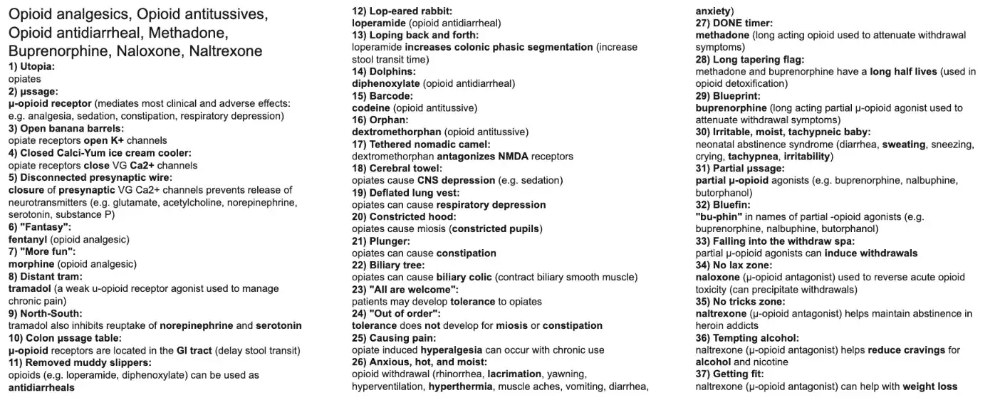
4. Broad-Spectrum Antiepileptics
Exam snapshot
- Drugs: valproate, topiramate, lamotrigine, levetiracetam, brivaracetam.
- Mechanism: valproate - Na+ and T-type Ca2+ blockade, raises GABA; topiramate - Na+ block, GABA-A potentiation, AMPA block; lamotrigine - Na+ block; levetiracetam/brivaracetam - SV2A.
- Indications: focal and generalized seizures; valproate JME and bipolar; topiramate migraine prophylaxis; lamotrigine bipolar maintenance and Lennox-Gastaut.
- Adverse: valproate hepatotoxicity, pancreatitis, tremor, weight gain, neural tube defects; topiramate kidney stones, glaucoma, cognitive slowing, weight loss; lamotrigine SJS; levetiracetam irritability/depression.
- Buzzwords: valproate = hyperammonemia and spina bifida; topiramate = 'Dopamax', stones, glaucoma; lamotrigine rash (slow titration); levetiracetam binds SV2A.
- 1One-arm shaking: Focal seizures originate in one hemisphere and are either aware (previously 'simple') or impaired awareness ('complex'); a patient who is aware but cannot talk or respond has a focal aware seizure.
- 2Shaking structure: Generalized seizures involve both hemispheres: motor (tonic-clonic: stiffening then jerking) or non-motor (absence: staring, brief unresponsiveness, automatisms).
- 3Rainbow goggles: Broad-spectrum antiepileptics (valproate, topiramate, lamotrigine, levetiracetam) treat both focal and generalized seizures.
- 4Shaking Man FestiVAL: Valproate (valproic acid) is a broad-spectrum antiepileptic used for focal and generalized seizures and bipolar disorder; the drug of choice for juvenile myoclonic epilepsy (except in women of childbearing potential).
- 5Sold Out peanuts and Calci-Yum ice cream: Valproate blocks voltage-gated Na+ channels (increases inactivation) and T-type Ca2+ channels, preventing repetitive neuronal firing.
- 6CAB-A: Valproate increases GABA levels in the CNS by inhibiting GABA transaminase, stimulating glutamic acid decarboxylase and enhancing GABA release.
- 7Nauseated reveller: Valproate commonly causes GI distress (nausea, vomiting); taking it with food helps.
- 8Heavy box: Valproate increases appetite and causes weight gain.
- 9Tremoring antenna: Valproate can cause tremor (dose-related).
- 10Liver fanny pack + ammonia cleaner: Valproate can cause hyperammonemia (even with normal LFTs) and rare fatal hepatotoxicity (especially in young children and with metabolic disease); baseline and periodic LFTs, although monitoring does not reliably predict liver failure.⭐ Valproate: hepatotoxicity, pancreatitis, teratogenicity (neural tube defects), hyperammonemia.
- 11Squeezed pancreas sponge: Valproate can cause pancreatitis (rare, idiosyncratic, not dose- or duration-dependent).
- 12Tubular tarantula: Valproate is highly teratogenic: neural tube defects (spina bifida), orofacial clefts, cardiac, urogenital and limb defects, and lower IQ; avoid in pregnancy; give folic acid.
- 13Toupee: Topiramate is a broad-spectrum antiepileptic used for focal and generalized seizures, Lennox-Gastaut syndrome, and migraine prophylaxis (also used with phentermine for weight loss; for absence seizures it is not first-line).
- 14Locked peanut boxes: Topiramate blocks voltage-gated Na+ channels, stabilizing neuronal membranes; it also blocks AMPA/kainate (glutamate) receptors.
- 15CAB-A pedicab passenger: Topiramate potentiates GABA-A activity by binding a non-benzodiazepine site.⭐ Topiramate: weak carbonic anhydrase inhibitor, causing metabolic acidosis and kidney stones.
- 16Sleeping driver: Topiramate can cause somnolence, fatigue, confusion, cognitive slowing and word-finding difficulty ('Dopamax').
- 17Skinny driver: Topiramate causes weight loss and anorexia; it is combined with phentermine for obesity (Qsymia).
- 18Kidney-shaped wheels: Topiramate can cause nephrolithiasis (calcium phosphate stones, due to carbonic anhydrase inhibition and urinary alkalinization); advise hydration.
- 19Bulging eye balloon: Topiramate can cause acute angle-closure glaucoma (usually in the first month); stop immediately if visual blurring or eye pain occurs.
- 20Llama: Lamotrigine is a broad-spectrum antiepileptic used for focal and generalized seizures, Lennox-Gastaut syndrome, bipolar disorder (maintenance); absence seizures (less effective than valproate or ethosuximide).
- 21Locked peanut box: Lamotrigine blocks voltage-gated Na+ channels, also reducing glutamate release.
- 22Cross-eyed: Lamotrigine can cause diplopia, blurred vision, dizziness, and ataxia.
- 23Sloughed off red mask: Lamotrigine can cause Stevens-Johnson syndrome/TEN (higher risk with rapid titration, valproate co-administration, and in children) as well as benign rash.⭐ Valproate doubles lamotrigine levels; titrate slowly and reduce dose.
- 24Elevator: Levetiracetam is a broad-spectrum antiepileptic for focal, myoclonic and generalized tonic-clonic seizures; it binds synaptic vesicle glycoprotein 2A (SV2A), modulating neurotransmitter release.⭐ Levetiracetam has minimal drug interactions (renally cleared, no CYP induction).
- 25Brave: Brivaracetam is an SV2A ligand used for focal-onset seizures (a more limited indication than levetiracetam).
- 26Dizzy, nauseated rider: Levetiracetam and brivaracetam can cause dizziness, somnolence and nausea.
- 27Falling brain hat: Levetiracetam (and less so brivaracetam) can cause neuropsychiatric effects: irritability, depression, hostility, aggression, agitation; higher risk with psychiatric history.
- 28P450 shoulder plates: Brivaracetam serum concentration is decreased with CYP450 inducers (phenytoin, carbamazepine, phenobarbital); it is also partly metabolized by CYP2C19.
Show the original legend picture
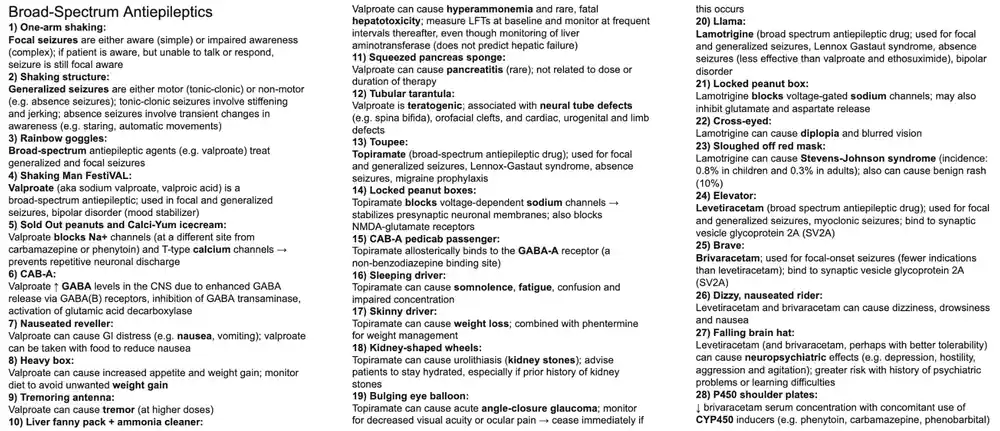
5. Carbamazepine, Oxcarbazepine, Phenytoin, Tiagabine, Vigabatrin
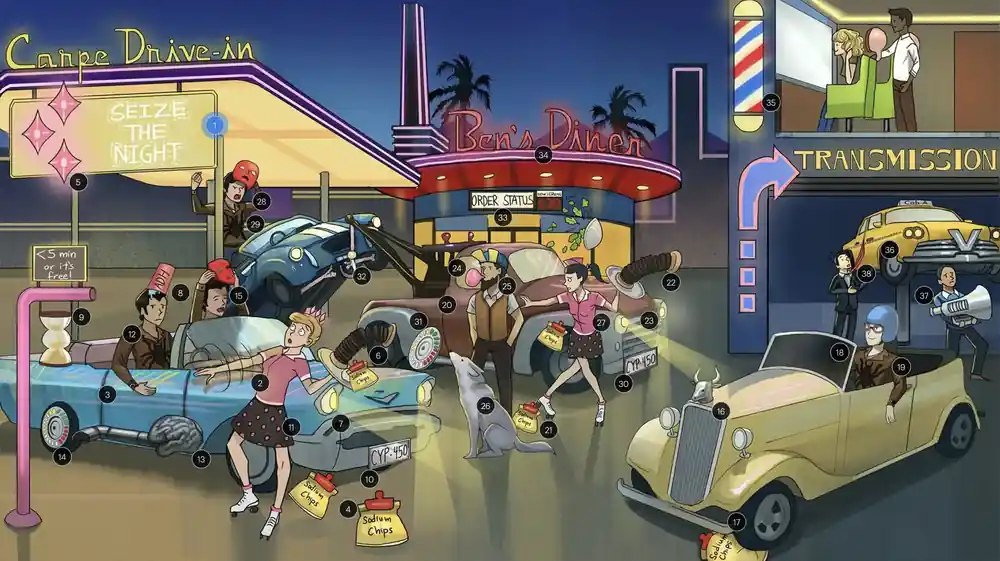
Exam snapshot
- Drugs: carbamazepine, oxcarbazepine, phenytoin (fosphenytoin IV), tiagabine, vigabatrin; benzodiazepines and phenobarbital for status epilepticus.
- Mechanism: carbamazepine, oxcarbazepine and phenytoin prolong Na+ channel inactivation; tiagabine blocks GABA reuptake (GAT-1); vigabatrin irreversibly inhibits GABA transaminase (raises GABA).
- Uses: focal and generalized tonic-clonic seizures; carbamazepine is first line for trigeminal neuralgia; status epilepticus: IV benzodiazepine first, phenytoin for maintenance, phenobarbital if refractory.
- Adverse effects: carbamazepine - agranulocytosis, SIADH, DRESS, SJS/TEN (screen HLA-B*1502), teratogenic, CYP450 inducer (lowers hormonal contraceptive levels); phenytoin - gingival hyperplasia, hirsutism, folate deficiency, low bone density, drug-induced lupus, cleft palate; both - ataxia and diplopia.
- Buzzwords: oxcarbazepine = carbamazepine with fewer side effects and interactions; fetal hydantoin syndrome; vigabatrin can cause permanent visual field loss.
- 1Seize the Night: Narrow-spectrum antiepileptics include carbamazepine, oxcarbazepine, phenytoin, phenobarbital.
- 2Focal arm shaking: Carbamazepine, oxcarbazepine and phenytoin treat focal seizures and generalized tonic-clonic seizures.
- 3Classic car: Carbamazepine is a narrow-spectrum antiepileptic.
- 4Inactivated salty sodium chip bags: Carbamazepine increases voltage- and use-dependent Na+ channel inactivation.
- 5Three gems: Carbamazepine is first-line for trigeminal neuralgia; oxcarbazepine is sometimes preferred because of fewer adverse effects and drug interactions.
- 6Unbalanced stack: Carbamazepine can cause ataxia and dizziness, particularly at therapy start or dose increases; controlled-release tablets reduce peak-related effects.
- 7Misaligned headlights: Carbamazepine can cause diplopia.
- 8Inappropriate wet head: Carbamazepine can cause SIADH and hyponatremia.
- 9Sand timer: Carbamazepine can cause agranulocytosis/aplastic anemia: check CBC before and during treatment; stop for significant marrow suppression; contraindicated with bone marrow depression history.
- 10Activated chrome bumper: Carbamazepine induces CYP450 enzymes (CYP2B6, CYP2C9, CYP3A4/5), decreasing serum levels of substrates (and its own).
- 11Eosinophilic dress: Carbamazepine can cause DRESS: stop the drug, treat with corticosteroids, and do not restart.
- 12Tarantula: Carbamazepine is teratogenic; avoid in pregnancy when possible.
- 13Neural exhaust tube: Carbamazepine in pregnancy can cause neural tube defects (spina bifida).
- 14Contraceptive pack wheel: Carbamazepine lowers estrogen and progestin levels in hormonal contraceptives via CYP3A4 induction; use a copper IUD, levonorgestrel IUD or depot medroxyprogesterone.⭐ Enzyme-inducing AEDs (carbamazepine, phenytoin, phenobarbital, topiramate at high dose) reduce OCP efficacy.
- 15Sloughed off red mask: Carbamazepine can cause SJS/TEN; HLA-B*1502 raises risk, so test at-risk patients (Asian ancestry) and avoid carbamazepine if positive.
- 16Ox car: Oxcarbazepine is a narrow-spectrum antiepileptic for focal seizures (monotherapy or adjunct) in adults and children; it is a prodrug of the active 10-monohydroxy metabolite.
- 17Inactivated salty sodium chip bags: Oxcarbazepine blocks voltage-dependent Na+ channels (increases inactivation).
- 18Helmet + tinted windows: Oxcarbazepine has fewer CNS side effects and drug interactions than carbamazepine (less CYP induction, no autoinduction); it can still cause SJS, DRESS, blood dyscrasias, and hyponatremia.
- 19Tarantula jacket: Oxcarbazepine is likely teratogenic (limited data).
- 20Classic tow truck: Phenytoin is a narrow-spectrum antiepileptic for simple and complex focal seizures and generalized tonic-clonic seizures.
- 21Inactivated salty sodium chip bags: Phenytoin increases voltage- and use-dependent Na+ channel inactivation.
- 22Unbalanced stack: Phenytoin can cause ataxia and nystagmus.
- 23Misaligned headlights: Phenytoin can cause diplopia.
- 24Expanding gum: Phenytoin can cause gingival hyperplasia.
- 25Big bushy beard: Phenytoin can cause hirsutism.
- 26Lupus wolf: Phenytoin, carbamazepine and oxcarbazepine can cause drug-induced lupus.
- 27Eosinophilic dress: Phenytoin can cause DRESS syndrome.
- 28Sloughed off red mask: Phenytoin can cause SJS/TEN.
- 29Tarantula: Phenytoin is teratogenic; use in pregnancy can cause cleft palate (fetal hydantoin syndrome).
- 30Activated chrome bumper: Phenytoin induces CYP450 (CYP1A2, CYP2B6, CYP2C9, CYP3A4/5), lowering substrate levels.
- 31Contraceptive pack hubcap: Phenytoin lowers hormonal contraceptive levels by CYP3A4 induction; use a copper IUD, levonorgestrel IUD or depot medroxyprogesterone.
- 32Fractured osteoporotic axle: Phenytoin decreases bone density; monitor BMD and supplement vitamin D and calcium during long-term therapy.
- 33'Status': Status epilepticus is continuous seizure activity (generally over 5 minutes) or repeated seizures without recovery between them.
- 34Ben's Diner: IV benzodiazepines (lorazepam, diazepam) are first-line for status epilepticus; IV phenytoin/fosphenytoin is used for maintenance.
- 35Barbershop: IV phenobarbital can be used in refractory seizures.
- 36Raised CAB-A: Vigabatrin and tiagabine are narrow-spectrum antiepileptics that increase GABA.
- 37V cab transmission: Vigabatrin irreversibly inhibits GABA transaminase, decreasing GABA degradation.
- 38Tied up cab driver: Tiagabine inhibits GABA reuptake (GAT-1).
Show the original legend picture
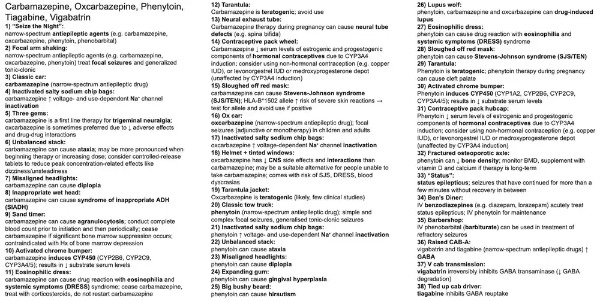
6. Ethosuximide
Exam snapshot
- Drug: ethosuximide (narrow-spectrum); alternatives for absence - valproate, lamotrigine.
- Mechanism: blocks T-type Ca2+ channels in thalamic neurons, suppressing 3 Hz spike-and-wave.
- Indication: absence seizures (first-line if no other seizure type); ACTH for infantile spasms; valproate for JME; benzodiazepines for febrile status.
- Adverse: GI distress, lethargy, headache; rarely SJS and blood dyscrasias.
- Buzzwords: 3 Hz spike-and-wave, hyperventilation trigger; hypsarrhythmia = West syndrome; slow spike-wave = Lennox-Gastaut; 'Ethosuximide Blocks Thalamic T-type Ca channels'.
- 1'Seize the day': Ethosuximide is an antiepileptic used for absence seizures.
- 2'Absences': Absence seizures are generalized non-motor seizures with brief loss of awareness without postictal confusion.
- 3Inattentive student: Absence seizures cause sudden brief lapses in awareness with staring or blinking, sometimes with automatisms or mild clonic jerks; common in school-aged children, triggered by hyperventilation.
- 4'3 spikes': Absence seizures show 3 Hz generalized spike-and-wave complexes on EEG.
- 5'Ethos': Ethosuximide is a narrow-spectrum antiepileptic and first-line therapy for absence seizures (when there are no other generalized seizure types).⭐ Ethosuximide is only effective in absence seizures; valproate covers absence plus tonic-clonic.
- 6Closed Calci-Yum chocolate: Ethosuximide blocks voltage-gated Ca2+ channels.
- 7Closed T-thermos: Ethosuximide specifically blocks T-type Ca2+ channels in thalamic neurons, dampening thalamocortical oscillation that generates spike-and-wave discharges.⭐ Ethosuximide Blocks Thalamic T-type Ca2+ channels.
- 8Punched in stomach: Ethosuximide commonly causes GI distress (abdominal pain, nausea, vomiting) and anorexia.
- 9Sleeping student: Ethosuximide can cause lethargy, fatigue, dizziness, headache; rare SJS and hematologic effects.
- 10FestiVAL banner: Valproate is effective against absence seizures and is preferred when absence coexists with tonic-clonic seizures.
- 11Llama: Lamotrigine is also effective against absence seizures (less effective than ethosuximide or valproate).
Show the original legend picture
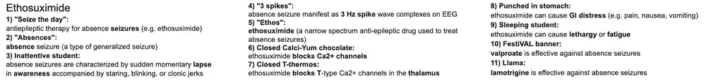
7. Gabapentin & Pregabalin
Exam snapshot
- Drugs: gabapentin and pregabalin (narrow-spectrum antiepileptics).
- Mechanism: bind the alpha-2-delta subunit of voltage-gated Ca2+ channels, lowering Ca2+ influx and neurotransmitter release.
- Uses: focal seizures (with or without secondary generalization); chronic neuropathic pain - painful diabetic neuropathy, postherpetic neuralgia (after varicella-zoster reactivation), fibromyalgia.
- Adverse effects: CNS effects - sedation, dizziness, ataxia.
- 1Grab a pint: Gabapentin and pregabalin are narrow-spectrum antiepileptics used as adjuncts for focal seizures, with or without secondary generalization, refractory or poorly controlled on other agents.
- 2Closed Calci-Yum ice cream cooler: Gabapentin and pregabalin bind the alpha-2-delta subunit of voltage-gated Ca2+ channels, decreasing Ca2+ influx and neurotransmitter release.⭐ Renally cleared: adjust dose in kidney disease.
- 3Chronically frayed wire: Gabapentin and pregabalin treat chronic neuropathic pain.
- 4Diasweetes: Gabapentin and pregabalin treat painful diabetic neuropathy.
- 5Fiber bars: Gabapentin and pregabalin treat fibromyalgia.
- 6Zeus: Gabapentin and pregabalin treat postherpetic neuralgia (reactivated VZV).
- 7Unbalanced scoops: Gabapentin and pregabalin can cause CNS side effects (ataxia, dizziness, sedation) and peripheral edema.⭐ Sedation is additive with opioids, benzodiazepines and alcohol.
Show the original legend picture
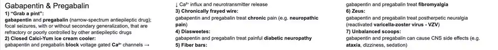
8. IV Anesthetics
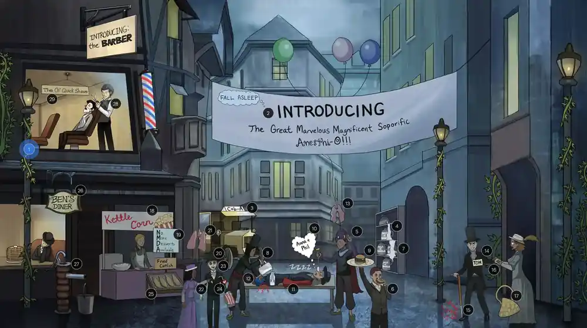
Exam snapshot
- Drugs: propofol, etomidate, ketamine, benzodiazepines (midazolam), barbiturates (thiopental, methohexital).
- Mechanism: propofol, etomidate, benzos, barbiturates enhance GABA-A Cl- current; ketamine blocks NMDA receptors. Short action of lipophilic agents is due to redistribution.
- Uses: induction (all), maintenance and ICU sedation (propofol), unstable patient induction (etomidate), analgesic/asthma/pediatric sedation (ketamine), procedural sedation (midazolam).
- Adverse: propofol - hypotension, apnea, hypertriglyceridemia; etomidate - adrenal suppression, myoclonus; ketamine - hallucinations, raised BP/ICP; thiopental - contraindicated in porphyria.
- Buzzwords: propofol = 'milk of amnesia'; ketamine = dissociative, PCP analog, bronchodilator; etomidate = hemodynamically stable; flumazenil reverses benzodiazepines.
- 1Ivy: IV anesthetics (propofol, etomidate, ketamine) are given intravenously.
- 2'Introducing' + 'Fall Asleep': IV anesthetics are commonly used for induction of general anesthesia (propofol, etomidate, ketamine, benzodiazepines, barbiturates).
- 3Cab-A: Most IV anesthetics (propofol, etomidate, benzodiazepines, barbiturates) potentiate Cl- current through the GABA-A receptor, decreasing CNS function.
- 4'Milk of Amnesia': Propofol (milky white lipid emulsion) is used for induction of anesthesia.
- 5Rapid snap: Propofol has very rapid onset because it is highly lipophilic and quickly enters well-perfused tissues such as the brain.
- 6Greasy burger: Propofol's high lipid solubility explains its rapid CNS uptake.
- 7Spilling milk: Propofol has a very short duration of action (about 5-10 minutes after a bolus) due to rapid redistribution from brain to less perfused tissues (skeletal muscle and fat).
- 8Continuously refilling the bottle: Propofol is used for maintenance of anesthesia and prolonged ICU sedation by infusion.⭐ Prolonged high-dose infusion can cause propofol infusion syndrome (metabolic acidosis, rhabdomyolysis, cardiac failure).
- 9Raised fatty food: Propofol is formulated in a lipid emulsion, so it can cause hypertriglyceridemia (and pancreatitis) with prolonged use; it also supports bacterial growth.
- 10'Annat Phil': Propofol's emulsion contains egg lecithin and soybean oil; hypersensitivity is possible, although egg allergy is rarely a true contraindication today.
- 11Dilated blue pants + red sleeves: Propofol causes profound arterial and venous vasodilation and hypotension.
- 12Painful poke: Propofol has no analgesic effect (and injection itself is painful).
- 13Collapsed lung balloon: Propofol causes significant respiratory depression and apnea after induction.⭐ Propofol also lowers ICP and has antiemetic and anticonvulsant effects.
- 14Tom on a date: Etomidate is used for induction of anesthesia, especially in hemodynamically unstable patients.
- 15Stabbed in the foot: Etomidate has no analgesic effect; also causes myoclonus and postoperative nausea and vomiting.
- 16Stabilizing Tom: Etomidate is hemodynamically neutral (minimal effect on BP, HR, cardiac output).⭐ Etomidate GABA-A modulator that is least hypotensive.
- 17Dropping adrenal-shaped purse: Etomidate inhibits 11-beta-hydroxylase (cortisol synthesis), causing adrenocortical suppression, even after a single dose.⭐ Etomidate adrenal suppression is a concern in septic shock.
- 18'Kettle Corn': Ketamine is used for induction of anesthesia.
- 19'No More Desserts Available': Ketamine inhibits the NMDA receptor (non-competitive glutamate antagonist).
- 20Food coma: Ketamine produces dissociative anesthesia with amnesia and analgesia, appearing cataleptic.
- 21Inflated lung balloon: Ketamine preserves respiratory drive and airway reflexes and causes bronchodilation (useful in asthma); patient may appear awake with eyes open.
- 22Pain-LESS poke: Ketamine has strong analgesic properties and is used for procedural (conscious) sedation, burns, and in children.
- 23Swirly eyes: Ketamine can cause emergence reactions: vivid dreams, visual/tactile/auditory hallucinations, out-of-body experiences; treat/prevent with benzodiazepines.
- 24Flying heart watch: Ketamine causes cardiovascular stimulation: increased BP, HR and cardiac output.
- 25Catfish: Ketamine's cardiovascular stimulation is mediated by catecholamine release (sympathomimetic), which also causes bronchodilation.⭐ Ketamine is the induction agent of choice in asthma and hypotension; avoid in raised ICP, CAD, psychosis.
- 26Ben's diner: Benzodiazepines (midazolam) are used preoperatively for anxiolysis, sedation, hypnosis and anterograde amnesia.
- 27Colon-shaped water pump: Benzodiazepines are used for conscious sedation in minor procedures such as colonoscopy.⭐ Midazolam is the preoperative benzodiazepine; flumazenil reverses.
- 28Barber: IV barbiturates (thiopental) can induce anesthesia but are rarely used today.
- 29'The Ol' Quick Shave': Thiopental is a fast-acting, highly lipid-soluble barbiturate with short duration due to redistribution; barbiturates have no analgesia and cause hypotension and respiratory depression.
Show the original legend picture
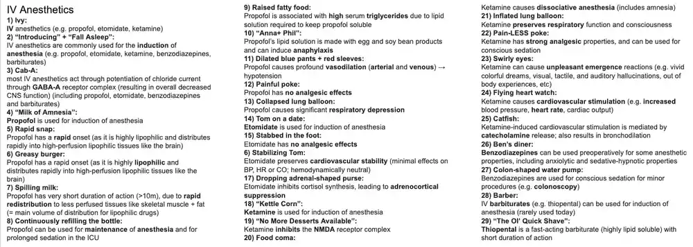
9. Inhaled Anesthetics & Dantrolene
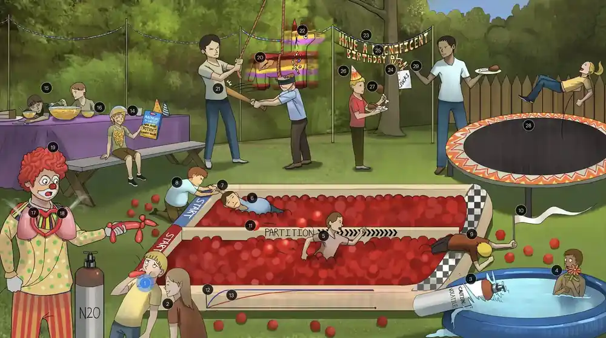
Exam snapshot
- Drugs: nitrous oxide (gas); volatile liquids - sevoflurane, isoflurane, desflurane, halothane, enflurane, methoxyflurane; dantrolene for malignant hyperthermia.
- Mechanism: enhance inhibitory (GABA-A, glycine) and inhibit excitatory receptors; onset is fast with low blood:gas partition coefficient; potency = 1/MAC.
- Uses: general anesthesia induction and maintenance (sevoflurane good for induction); N2O adjunct analgesic; dantrolene for malignant hyperthermia.
- Adverse: myocardial and respiratory depression, increased cerebral blood flow; halothane hepatotoxicity; methoxyflurane/enflurane nephrotoxicity; enflurane seizures; N2O diffusion hypoxia and B12 inactivation.
- Buzzwords: MAC; blood:gas coefficient; malignant hyperthermia = volatile agents + succinylcholine + RYR1 defect; dantrolene blocks ryanodine receptor.
- 1Inhaling balloon: Inhaled anesthetics (nitrous oxide and volatile halogenated agents) produce general anesthesia, loss of consciousness, amnesia and immobility; they are used for induction (sevoflurane) and maintenance.
- 2'Laughing gas': Nitrous oxide (N2O) is the only gaseous anesthetic; it has low potency (MAC about 105%), so it cannot be used alone, but has very fast onset/offset and is analgesic.⭐ N2O causes diffusion hypoxia on recovery, expands air-filled spaces (pneumothorax, bowel obstruction), and inactivates vitamin B12 (megaloblastic anemia).
- 3Air tank in water: Volatile anesthetics (isoflurane, sevoflurane, desflurane, halothane, enflurane) are liquids at room temperature that vaporize and are delivered by vaporizer.
- 4Balloon flower: Volatile anesthetics are halogenated (fluorinated) ethers/hydrocarbons; halothane also contains bromine and chlorine.
- 5Moving freely in ball pit: Blood solubility determines how readily the agent leaves blood for the brain: agents of low blood solubility (N2O, desflurane, sevoflurane) move freely into the brain, while highly soluble agents (halothane) are held up in blood.check original
- 6Impeded by ball pit: Highly blood-soluble agents are retained in blood (large reservoir), so brain partial pressure rises slowly.check original
- 7Passed out earlier: Less soluble agents (N2O, desflurane) have faster onset of action because alveolar and arterial partial pressures equilibrate quickly.
- 8Immediate rescue: Less soluble agents also have faster recovery (rapid washout).
- 9Passed out later: More soluble agents (halothane) have slower onset because a large amount must dissolve in blood before brain partial pressure rises.
- 10Long tapering flag: More soluble agents have a longer duration of action/slower recovery.
- 11Partition coefficient: A higher blood:gas partition coefficient means higher solubility and slower induction and recovery.
- 12Steeper arterial tension curve: Agents with a low blood:gas partition coefficient (N2O, desflurane) have lower solubility and a rapid rise in arterial partial pressure, so onset is faster.
- 13Less steep arterial tension curve: Agents with a high blood:gas partition coefficient (halothane) have higher solubility and slower rise in arterial tension, so onset is slower.⭐ Onset is faster for low blood solubility; speed is also increased by high ventilation, low cardiac output.
- 14Mac and cheese: Minimum alveolar concentration (MAC) is the alveolar concentration at which 50% of patients do not move in response to a surgical stimulus.
- 151 out of 2 kids unresponsive: MAC is the dose at which 50% of patients are unresponsive to a painful (surgical incision) stimulus.
- 16Inverted bowl of potent mac and cheese: Potency is inversely proportional to MAC (1/MAC); lower MAC = more potent (halothane most potent among common agents, N2O least).⭐ MAC rises with young age, chronic alcohol use, hyperthermia; falls with elderly, pregnancy, opioids, N2O.
- 17Deflating heart balloon: Inhaled anesthetics cause myocardial depression and vasodilation, decreasing cardiac output and causing hypotension.⭐ Halothane also sensitizes the myocardium to catecholamines (arrhythmias).
- 18Deflating lung balloons: Inhaled anesthetics cause respiratory depression with decreased minute ventilation and hypercapnia (and decreased response to hypoxia/CO2).
- 19Red brain wig: Fluorinated volatile anesthetics increase cerebral blood flow (cerebral vasodilation, lower cerebrovascular resistance) and ICP, though they reduce metabolic rate.
- 20Cracked liver: Halothane can cause hepatotoxicity ('halothane hepatitis', massive hepatic necrosis, immune-mediated via trifluoroacetylated proteins), particularly with repeat exposure.
- 21Smacked in the flank: Methoxyflurane is nephrotoxic (fluoride release; high-output renal failure); enflurane also releases fluoride and can rarely cause renal toxicity.⭐ Methoxyflurane = nephrotoxicity.check original
- 22Shaking: Enflurane can induce seizures (epileptiform EEG activity), especially with hyperventilation.
- 23Magnificent birthday: Malignant hyperthermia (MH): a life-threatening hypermetabolic crisis triggered by volatile anesthetics or succinylcholine in genetically susceptible patients; signs include hypercarbia, tachycardia, rigidity, fever, acidosis, hyperkalemia, rhabdomyolysis.
- 24'Sucks': Succinylcholine (depolarizing neuromuscular blocker) is also a trigger for malignant hyperthermia, along with volatile anesthetics.
- 25Defective RYAN: Malignant hyperthermia is associated with mutations in the ryanodine receptor (RYR1) of the sarcoplasmic reticulum (autosomal dominant).⭐ Associated with central core disease.
- 26Flame theme: Defective RYR1 releases excess Ca2+ from the sarcoplasmic reticulum; excessive ATP-dependent Ca2+ reuptake and sustained contraction consume ATP and generate heat.
- 27Bite out of muscle: Sustained contraction and ATP depletion cause muscle damage (rhabdomyolysis) with myoglobinuria, hyperkalemia and elevated CK.
- 28Trampoline: Dantrolene, a skeletal muscle relaxant, is the treatment for malignant hyperthermia (give IV along with cooling and stopping the trigger).⭐ Dantrolene also treats neuroleptic malignant syndrome (sometimes).
- 29Blocking Ryan: Dantrolene blocks the ryanodine receptor (RYR1), preventing Ca2+ release from the sarcoplasmic reticulum and relaxing skeletal muscle.⭐ Dantrolene can cause hepatotoxicity with chronic use.
Show the original legend picture
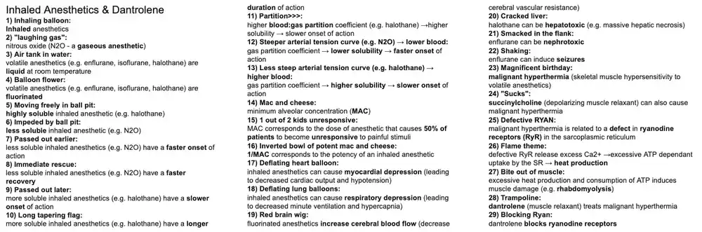
10. Parkinsonism Drugs
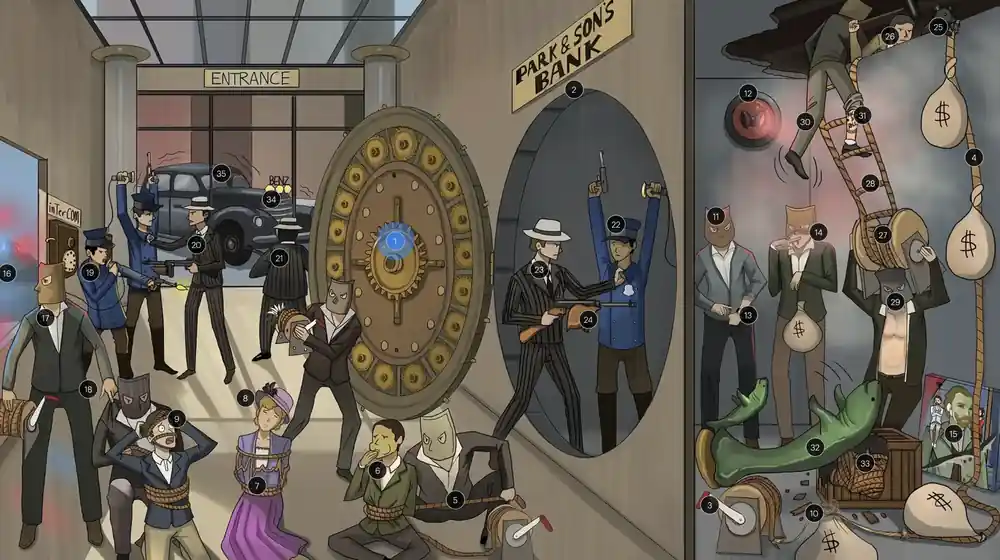
Exam snapshot
- Drugs: levodopa/carbidopa, COMT inhibitors (entacapone, tolcapone), MAO-B inhibitors (selegiline, rasagiline), dopamine agonists (pramipexole, ropinirole), amantadine, antimuscarinics (benztropine, trihexyphenidyl).
- Mechanism: restore dopaminergic tone in the striatum or reduce relative cholinergic excess; carbidopa blocks peripheral DOPA decarboxylase; COMT and MAO-B inhibitors slow dopamine/levodopa breakdown.
- Indications: Parkinson disease (tremor, rigidity, bradykinesia); dopamine agonists also for restless legs syndrome; antimuscarinics mainly for tremor/rigidity and drug-induced parkinsonism; amantadine also for influenza A.
- Adverse effects: levodopa - nausea, orthostatic hypotension, arrhythmias, hallucinations/psychosis, dyskinesias, on-off and wearing-off effects; tolcapone - hepatotoxicity; dopamine agonists - impulse control disorders, sleep attacks; antimuscarinics - dry mouth, urinary retention, confusion.
- Buzzwords: levodopa is contraindicated with non-selective MAO inhibitors and in psychosis; carbidopa does not cross the BBB; amantadine causes livedo reticularis; selegiline plus meperidine or SSRIs risks serotonin syndrome.
- 1Cracked open cogwheels: Parkinsonism therapy: the icon for the drug class used to treat Parkinson disease (cogwheel rigidity, resting tremor, bradykinesia).
- 2Bank vault threshold: The blood-brain barrier (BBB), which dopamine itself cannot cross.
- 3"L" rope crank inside vault: Levodopa (L-DOPA), the dopamine precursor, crosses the BBB via large neutral amino acid transporters.⭐ Dietary protein competes for this transporter and can reduce levodopa effect.
- 4Unfurled rope in vault: In the CNS, levodopa is converted to dopamine by DOPA decarboxylase, replenishing striatal dopamine.
- 5Unfurled rope in lobby: In the periphery, levodopa is converted to dopamine by DOPA decarboxylase; peripheral dopamine cannot cross the BBB and causes side effects.
- 6Nauseated hostage: Levodopa causes GI distress (nausea, vomiting) because peripheral dopamine stimulates the chemoreceptor trigger zone.
- 7Arrhythmia rope: Levodopa can cause cardiac arrhythmias from peripheral dopamine acting on cardiac receptors.
- 8Passed out hostage: Levodopa can cause orthostatic hypotension from peripheral dopamine-mediated vasodilation.
- 9Psychiatrically disturbed hostage: Excess central dopamine from levodopa can cause neuropsychiatric effects: anxiety, agitation, insomnia, confusion, vivid dreams, hallucinations.⭐ Treat psychosis in Parkinson disease with pimavanserin, quetiapine or clozapine (avoid D2-blocking antipsychotics).
- 10End of rope wearing-off: Chronic levodopa therapy causes a wearing-off reaction: symptoms (akinesia) re-emerge toward the end of each dose interval.
- 11"Too long!": Chronic levodopa therapy produces response fluctuations (wearing-off, on-off phenomenon) and dyskinesias.
- 12Flashing on and off: On-off phenomenon: abrupt, unpredictable swings between periods of good mobility (on) and akinesia (off), not clearly related to dose timing.
- 13Narrowing window: As Parkinson disease progresses, the therapeutic window of levodopa narrows between benefit and dyskinesia, making response unpredictable.
- 14Writhing sneeze: Chronic levodopa therapy can cause dyskinesias (choreoathetoid movements of the face and distal extremities), typically at peak dose.
- 15Damaged psychotic painting: Levodopa is contraindicated in psychotic patients (it can worsen psychosis); also avoid with non-selective MAO inhibitors (hypertensive crisis).
- 16Police car on periphery: Carbidopa is a peripheral DOPA decarboxylase inhibitor that does not cross the BBB.
- 17Scared into vault: Carbidopa increases the bioavailability of levodopa by preventing its peripheral conversion to dopamine, so more reaches the CNS and the dose can be lowered.⭐ Given as carbidopa/levodopa (Sinemet).
- 18Pulling away from hostages: Carbidopa decreases peripheral side effects of levodopa (nausea, hypotension, arrhythmia), but central side effects (psychiatric, dyskinesia) can be exacerbated since more levodopa reaches the CNS.
- 19InTerCOM guard shooting "L" crank: Catechol-O-methyltransferase (COMT) converts levodopa to 3-O-methyldopa (3-OMD) in the periphery, reducing levodopa available to the brain.
- 20Tall Al Capone gangster: Tolcapone is a peripheral and central COMT inhibitor that increases levodopa bioavailability and prolongs its action.
- 21Al Capone gangster at entrance: Entacapone is a peripheral COMT inhibitor that increases levodopa bioavailability; used as an adjunct to treat wearing-off.⭐ Entacapone does not cross the BBB and is safer than tolcapone.
- 22InTerCOM guard in vault: In the CNS, COMT converts dopamine to 3-methoxytyramine (3-MT), inactivating it.
- 23Tall gangster in vault: Tolcapone also inhibits central COMT, directly increasing CNS dopamine levels.
- 24Hepatic gun: Tolcapone can cause fulminant hepatic failure; requires liver function monitoring and is reserved for patients who fail other therapy.
- 25Black mouse eating rope: Monoamine oxidase B (MAO-B) selectively metabolizes dopamine in the brain.
- 26Sledge hammer: Selegiline (and rasagiline) are selective MAO-B inhibitors that increase CNS dopamine levels, used as adjuncts to levodopa.⭐ Avoid combining with meperidine, SSRIs or TCAs (serotonin syndrome); selectivity is lost at high doses.
- 27Rope in a roll: Ropinirole is a non-ergot D2 dopamine receptor agonist and an important initial treatment of Parkinson disease, especially in younger patients.
- 28Double rope ladder: The D2 dopamine receptor, the target of ropinirole and pramipexole.
- 29Big pecs: Pramipexole is a D3-preferring (also D2) dopamine receptor agonist and an important initial treatment of Parkinson disease.⭐ Dopamine agonists delay the need for levodopa and motor complications.
- 30Restless legs: Dopamine receptor agonists (ropinirole, pramipexole) treat restless legs syndrome (RLS).
- 31"Rock and roll": Dopamine receptor agonists can cause impulse control disorders (pathologic gambling, shopping, hypersexuality), as well as hallucinations, sleep attacks and orthostatic hypotension.
- 32Manatee: Amantadine can treat some motor symptoms of Parkinson disease, especially dyskinesias; it is also an antiviral for influenza A.⭐ Adverse effects: livedo reticularis, peripheral edema, ataxia, confusion.
- 33Breaking open rope: Amantadine enhances endogenous dopamine effect by increasing dopamine synthesis and release and inhibiting its reuptake (also has NMDA antagonist activity).
- 34Tri-hex Benz car: Trihexyphenidyl and benztropine are antimuscarinic (anticholinergic) agents used to treat parkinsonism, restoring the dopamine-acetylcholine balance in the striatum.⭐ Also used for acute dystonia from antipsychotics; cause dry mouth, urinary retention, constipation, confusion.
- 35Trembling getaway car: Trihexyphenidyl and benztropine improve the tremor and rigidity of Parkinson disease but have no effect on bradykinesia.⭐ Avoid in elderly patients (cognitive impairment) and in narrow-angle glaucoma or BPH.
Show the original legend picture
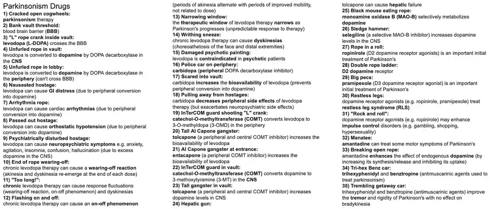
11. Alzheimer's Disease Medications
Exam snapshot
- Drugs: cholinesterase inhibitors donepezil, rivastigmine, galantamine; memantine (NMDA receptor antagonist); anti-amyloid antibodies (aducanumab, lecanemab).
- Mechanism: cholinesterase inhibitors raise ACh in the brain; memantine blocks NMDA receptors to limit glutamate excitotoxicity; anti-amyloid antibodies clear beta-amyloid plaques.
- Adverse effects: cholinergic - nausea, vomiting, diarrhea, insomnia, dizziness, bradycardia, heart block; memantine - dizziness, headache, confusion, hallucinations; anti-amyloid antibodies - ARIA (cerebral edema and microhemorrhage).
- Dementia DDx: Alzheimer (amyloid plaques, tau tangles, APOE4, hippocampal atrophy); Lewy body (fluctuating cognition, visual hallucinations, parkinsonism, REM sleep behavior disorder, alpha-synuclein); vascular (stepwise decline after strokes); frontotemporal (personality change or language loss, Pick bodies); normal pressure hydrocephalus (wet, wobbly, wacky; enlarged ventricles); CJD (rapid decline, myoclonus).
- 1King Alzheimer scratching head: Alzheimer disease is the most common cause of dementia.
- 2"ANTI-ESTablishment Tourney": Drug treatment of Alzheimer disease starts with cholinesterase inhibitors (rivastigmine, galantamine, donepezil).⭐ Cholinergic deficit from loss of basal forebrain (nucleus basalis of Meynert) neurons.
- 3River: Rivastigmine, a cholinesterase inhibitor (also inhibits butyrylcholinesterase) available orally or as a patch.
- 4Gallant knight: Galantamine, a cholinesterase inhibitor.
- 5"Donezo" flag: Donepezil, a cholinesterase inhibitor.
- 6Vomiting knight: Cholinesterase inhibitors (rivastigmine, galantamine, donepezil) cause nausea and vomiting (GI side effects) from increased muscarinic tone.
- 7Mud: Cholinesterase inhibitors commonly cause diarrhea from increased GI motility.
- 8Sleep deprived eyes: Cholinesterase inhibitors (particularly donepezil) can cause insomnia and vivid dreams; dizziness is also common.
- 9Heart shield: Cholinesterase inhibitors can cause bradycardia and heart block (vagal effect), so use caution with conduction disease or syncope.
- 10Merman blocking gate + "No More Drawbridge Access": Memantine is an NMDA receptor antagonist (uncompetitive channel blocker), used for moderate-to-severe Alzheimer disease, often with a cholinesterase inhibitor.⭐ It blocks pathologic glutamate-driven Ca2+ influx only when the channel is open.
- 11Brain coral helmet: Memantine is neuroprotective: it prevents glutamate excitotoxicity from excess Ca2+ entry into neurons.
- 12Colorful fabric behind merman: Adverse effects of memantine include headache, dizziness, confusion and hallucinations.
- 13A duke + B antibody scepter: Aducanumab is an amyloid-beta-directed monoclonal antibody that clears amyloid plaques (lecanemab and donanemab are related agents).⭐ Approved on surrogate plaque reduction; clinical benefit is modest.
- 14Floppy brain hat with red threads: Adverse effects of aducanumab include headache and amyloid-related imaging abnormalities (ARIA): cerebral edema (ARIA-E) and microhemorrhage (ARIA-H).⭐ Risk is higher in APOE4 carriers; avoid with anticoagulation.
Show the original legend picture
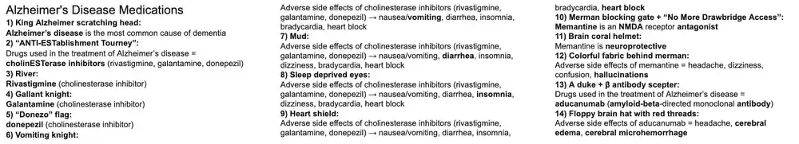